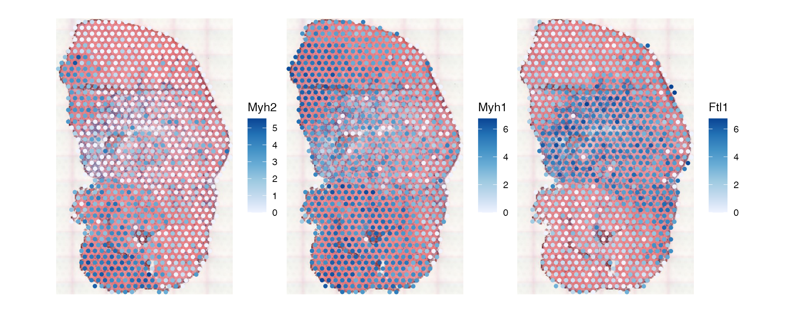
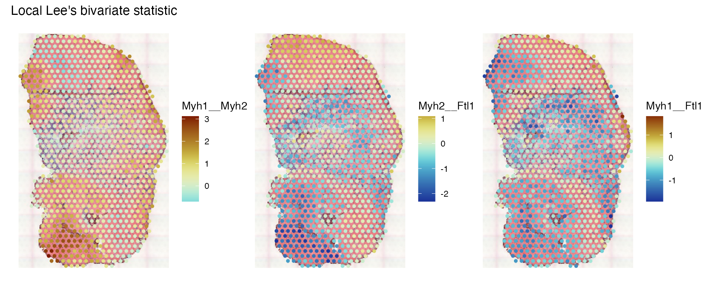
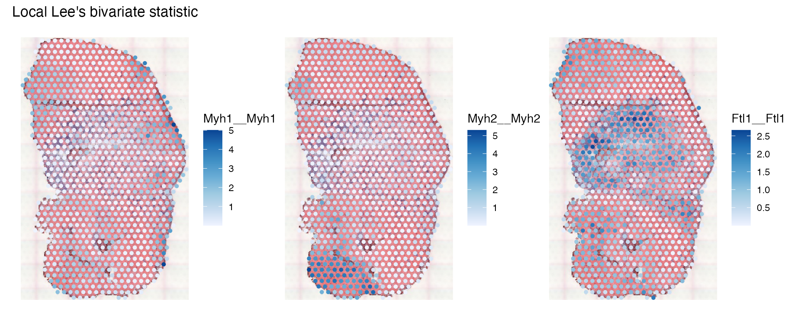
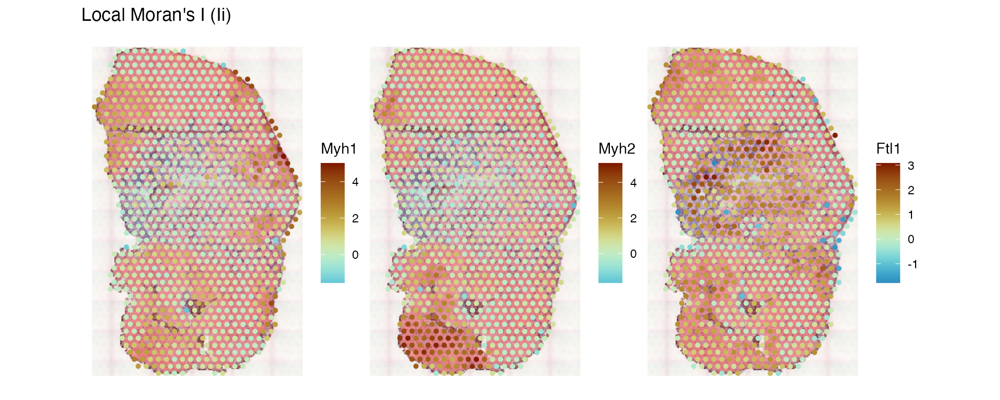
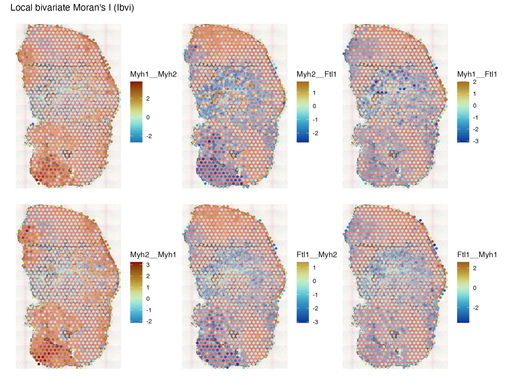
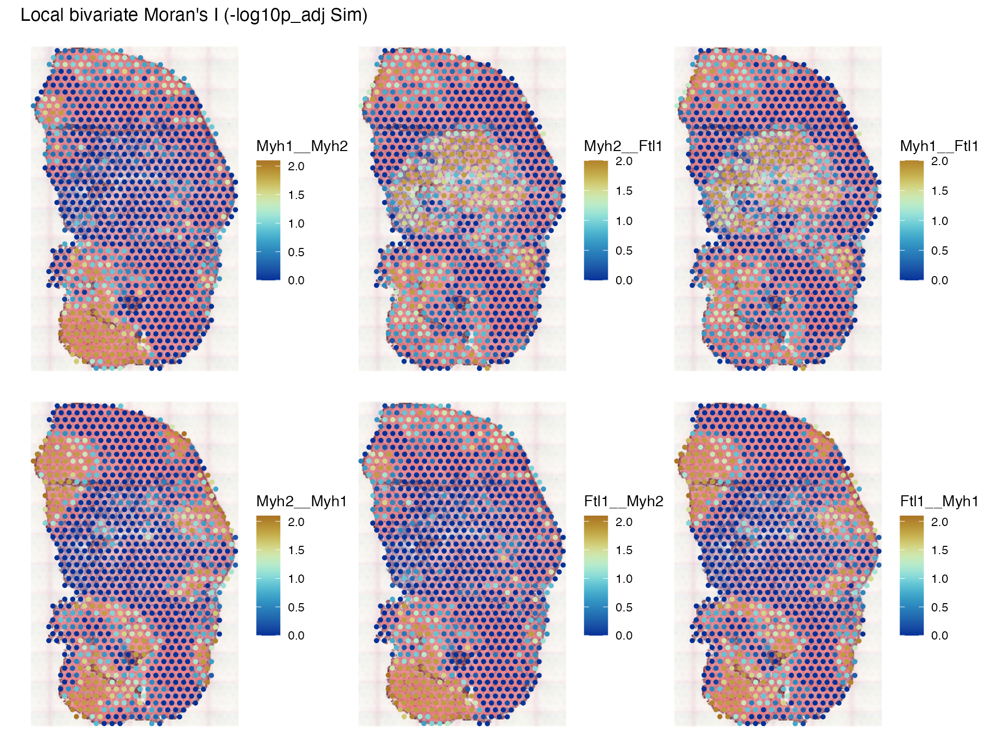

Introduction
Consider two variables that are correlated, say with Pearson
correlation of 0.8. The observations are spatially referenced. The
locations of the observations can be permuted without affecting Pearson
correlation. The purpose of bivariate spatial statistics is to indicate
both correlation in value (as in Pearson correlation), and spatial
autocorrelation and co-patterning. One of the bivariate methods
implemented in Voyager is the cross variogram, which is
shown in the variogram
vignette. This vignette demonstrates other bivariate spatial
statistics, which use a spatial neighborhood graph, on the mouse
skeletal muscle Visium dataset.
Here we load the packages used:
library(Voyager)
library(SFEData)
library(SpatialFeatureExperiment)
library(scater)
library(scran)
library(ggplot2)
library(pheatmap)
library(scico)
theme_set(theme_bw())A list of all bivariate global methods can be seen here:
listSFEMethods(variate = "bi", scope = "global")
#> name description
#> 1 lee Lee's bivariate statistic
#> 2 lee.mc Lee's bivariate static with permutation testing
#> 3 lee.test Lee's L test
#> 4 cross_variogram Cross variogram
#> 5 cross_variogram_map Cross variogram mapWhen calling calculate*variate() or
run*variate(), the type (2nd) argument takes
either an SFEMethod object or a string that matches an
entry in the name column in the data frame returned by
listSFEMethods().
QC was performed in another vignette, so this vignette will not plot QC metrics.
(sfe <- McKellarMuscleData("full"))
#> see ?SFEData and browseVignettes('SFEData') for documentation
#> loading from cache
#> class: SpatialFeatureExperiment
#> dim: 15123 4992
#> metadata(0):
#> assays(1): counts
#> rownames(15123): ENSMUSG00000025902 ENSMUSG00000096126 ...
#> ENSMUSG00000064368 ENSMUSG00000064370
#> rowData names(6): Ensembl symbol ... vars cv2
#> colnames(4992): AAACAACGAATAGTTC AAACAAGTATCTCCCA ... TTGTTTGTATTACACG
#> TTGTTTGTGTAAATTC
#> colData names(12): barcode col ... prop_mito in_tissue
#> reducedDimNames(0):
#> mainExpName: NULL
#> altExpNames(0):
#> spatialCoords names(2) : imageX imageY
#> imgData names(1): sample_id
#>
#> unit: full_res_image_pixels
#> Geometries:
#> colGeometries: spotPoly (POLYGON)
#> annotGeometries: tissueBoundary (POLYGON), myofiber_full (POLYGON), myofiber_simplified (POLYGON), nuclei (POLYGON), nuclei_centroid (POINT)
#>
#> Graphs:
#> Vis5A:The image can be added to the SFE object and plotted behind the geometries, and needs to be flipped to align to the spots because the origin is at the top left for the image but bottom left for geometries.
if (!file.exists("tissue_lowres_5a.jpeg")) {
download.file("https://raw.githubusercontent.com/pachterlab/voyager/main/vignettes/tissue_lowres_5a.jpeg",
destfile = "tissue_lowres_5a.jpeg")
}
sfe <- addImg(sfe, file = "tissue_lowres_5a.jpeg", sample_id = "Vis5A",
image_id = "lowres",
scale_fct = 1024/22208)
sfe <- mirrorImg(sfe, sample_id = "Vis5A", image_id = "lowres")
sfe_tissue <- sfe[,colData(sfe)$in_tissue]
sfe_tissue <- sfe_tissue[rowSums(counts(sfe_tissue)) > 0,]
sfe_tissue <- logNormCounts(sfe_tissue)
colGraph(sfe_tissue, "visium") <- findVisiumGraph(sfe_tissue)Lee’s L
Lee’s L (Lee 2001) was developed from relating Moran’s I to Pearson correlation, and is defined as
\[ L_{X,Y} = \frac{n}{\sum_{i=1}^n \sum_{j=1}^n w_{ij}} \frac{\sum_{i=1}^n \left[ \sum_{j=1}^n w_{ij} (x_j - \bar{x}) \right] \left[ \sum_{j=1}^n w_{ij} (y_j - \bar{y}) \right]}{\sqrt{\sum_{i=1}^n (x_i - \bar{x})^2}\sqrt{\sum_{i=1}^n (y_i - \bar{y})^2} }, \]
where \(n\) is the number of spots or locations, \(i\) and \(j\) are different locations, or spots in the Visium context, \(x\) and \(y\) are variables with values at each location, and \(w_{ij}\) is a spatial weight, which can be inversely proportional to distance between spots or an indicator of whether two spots are neighbors, subject to various definitions of neighborhood.
Here we compute Lee’s L for top highly variagle genes (HVGs) in this dataset:
hvgs <- getTopHVGs(sfe_tissue, fdr.threshold = 0.01)Because bivariate global results can have very different formats (matrix for Lee’s L and lists for many other methods), the results are not stored in the SFE object.
res <- calculateBivariate(sfe_tissue, type = "lee", feature1 = hvgs)This gives a spatially informed correlation matrix among the genes, which can be plotted as a heatmap:
pal_rng <- getDivergeRange(res)
pal <- scico(256, begin = pal_rng[1], end = pal_rng[2], palette = "vik")
pheatmap(res, color = pal, show_rownames = FALSE,
show_colnames = FALSE, cellwidth = 1, cellheight = 1)
Some coexpression blocks can be seen. Note that unlike in Pearson correlation, the diagonal is not 1, because
\[ L_{X,X} = \frac{\sum_i (\tilde x_i - \bar x)^2}{\sum_i (x_i - \bar x)^2} = \mathrm{SSS}_X, \]
which is approximated the ratio between the variance of spatially lagged \(x\) and variance of \(x\). Because the spatial lag introduces smoothing, the spatial lag reduced variance, making the diagonal less than 1. This is the spatial smoothing scalar (SSS), and Moran’s I is approximately Pearson correlation between \(X\) and spatially lagged \(X\) (\(\tilde X\)) multiplied by SSS:
\[ I \approx \mathrm{SSS}_X \cdot \rho_{X, \tilde X} \]
Similarly for Lee’s L, as shown in (Lee 2001),
\[ L_{X, Y} = \sqrt{\mathrm{SSS}_X}\sqrt{\mathrm{SSS}_Y} \cdot \rho_{\tilde X, \tilde Y} \]
With more spatial clustering, the variance is less reduced by the spatial lag, leading to a larger SSS. Hence when both \(X\) and \(Y\) are spatially distributed like salt and pepper while strongly correlated, Lee’s L will be low because the lack of spatial autocorrelation leads to a small SSS.
Weighted correlation network analysis (WGCNA) (Langfelder and Horvath 2008) is a time honored method to find gene co-expression modules, and it can take any correlation matrix. Then it would be interesting to apply WGCNA to the Lee’s L matrix to identify spatially informed gene co-expression modules.
Local Lee
Local Lee’s L (Lee 2001) is defined as
\[ L_i = \frac{n\left[ \sum_{j=1}^n w_{ij} (x_j - \bar{x}) \right] \left[ \sum_{j=1}^n w_{ij} (y_j - \bar{y}) \right]}{\sqrt{\sum_{i=1}^n (x_i - \bar{x})^2}\sqrt{\sum_{i=1}^n (y_i - \bar{y})^2} } \]
Compare this to the global L in the previous section. Local L does not sum over the locations \(i\). This is the contribution of each location to global L and can show spatial heterogeneity in the relationship between two variables.
All bivariate local methods in Voyager is listed
here:
listSFEMethods("bi", "local")
#> name description
#> 1 locallee Local Lee's bivariate statistic
#> 2 localmoran_bv Local bivariate Moran's IHere we compute local L for two myofiber marker genes and one gene highly expressed in the injury site:
sfe_tissue <- runBivariate(sfe_tissue, "locallee", swap_rownames = "symbol",
feature1 = c("Myh2", "Myh1", "Ftl1"))Bivariate local results are stored in the localResults
field and the feature names are the pairwise combinations of features
supplied. When only feature1 is specified, then the
bivariate method is applied to all pairwise combinations of
feature1.
localResultFeatures(sfe_tissue, "locallee")
#> [1] "Myh2__Myh2" "Myh1__Myh2" "Ftl1__Myh2" "Myh2__Myh1" "Myh1__Myh1"
#> [6] "Ftl1__Myh1" "Myh2__Ftl1" "Myh1__Ftl1" "Ftl1__Ftl1"For Lee’s L, both \(L_{X,Y}\) and \(L_{Y,X}\) are computed although they are the same. However, not all bivariate methods are symmetric (see next section). In the next release (Bioconductor 3.18), we may introduce another argument to indicate whether the method is symmetric and if so only compute \(L_{X,Y}\) and not \(L_{Y,X}\).
First plot the three genes individually:
plotSpatialFeature(sfe_tissue, c("Myh2", "Myh1", "Ftl1"),
swap_rownames = "symbol", image_id = "lowres", maxcell = 5e4)
Then plot the local L’s:
plotLocalResult(sfe_tissue, "locallee", c("Myh1__Myh2", "Myh2__Ftl1", "Myh1__Ftl1"),
colGeometryName = "spotPoly",
image_id = "lowres", maxcell = 5e4,
divergent = TRUE, diverge_center = 0)
Here we see regions where Myh1 and Myh2 are more co-expressed, and where the myosins and Ftl1 are negatively correlated.
\(L_{X,X}\) is also computed, so we can plot the local SSS for the three genes:
plotLocalResult(sfe_tissue, "locallee", c("Myh1__Myh1", "Myh2__Myh2", "Ftl1__Ftl1"),
colGeometryName = "spotPoly",
image_id = "lowres", maxcell = 5e4)
See how the local SSS compares to local Moran’s I:
sfe_tissue <- runUnivariate(sfe_tissue, "localmoran", c("Myh2", "Myh1", "Ftl1"),
swap_rownames = "symbol")
plotLocalResult(sfe_tissue, "localmoran", c("Myh1", "Myh2", "Ftl1"),
colGeometryName = "spotPoly", swap_rownames = "symbol",
image_id = "lowres", maxcell = 5e4,
divergent = TRUE, diverge_center = 0)
The patterns are qualitatively the same, but while local Moran’s I is negative in heterogeneous regions, the SSS can’t be negative.
Bivariate local Moran
The spdep package implements a bivariate version of
local Moran, which basically is
\[ I_{X_i,Y_i} = (n-1)\frac{(x_i - \bar{x})\sum_{j=1}^n w_{ij} (y_j - \bar{y})}{\sqrt{\sum_{i=1}^n (x_i - \bar{x})^2} \sqrt{\sum_{i=1}^n (y_i - \bar{y})^2}}. \]
Note that this is not symmetric, i.e. \(I_{X_i,Y_i} \neq I_{Y_i,X_i}\).
sfe_tissue <- runBivariate(sfe_tissue, "localmoran_bv", c("Myh1", "Myh2", "Ftl1"),
swap_rownames = "symbol", nsim = 1000)
localResultFeatures(sfe_tissue, "localmoran_bv")
#> [1] "Myh1__Myh1" "Myh2__Myh1" "Ftl1__Myh1" "Myh1__Myh2" "Myh2__Myh2"
#> [6] "Ftl1__Myh2" "Myh1__Ftl1" "Myh2__Ftl1" "Ftl1__Ftl1"Permutation testing is performed so we get a pseudo p-value
localResultAttrs(sfe_tissue, "localmoran_bv", "Myh1__Myh2")
#> [1] "Ibvi" "E.Ibvi" "Var.Ibvi"
#> [4] "Z.Ibvi" "Pr(z != E(Ibvi))" "Pr(z != E(Ibvi)) Sim"
#> [7] "Pr(folded) Sim" "-log10p Sim" "-log10p_adj Sim"First plot the bivariate local Moran’s I values
plotLocalResult(sfe_tissue, "localmoran_bv", c("Myh1__Myh2", "Myh2__Ftl1", "Myh1__Ftl1",
"Myh2__Myh1", "Ftl1__Myh2", "Ftl1__Myh1"),
colGeometryName = "spotPoly", attribute = "Ibvi",
image_id = "lowres", maxcell = 5e4,
divergent = TRUE, diverge_center = 0)
The first row plots XY while the second row plots YX; note that while they are similar, they are not the same. What does bivariate local Moran mean? It’s kind of like contribution of each location to the correlation between \(x\) and spatially lagged \(y\), so \(x\) is not smoothed. In contrast, Lee’s L is a scaled Pearson correlation between spatially lagged \(x\) and spatially lagged \(y\). Because permutation testing is performed, we can plot the pseudo-p-value, after correcting for multiple testing based on the spatial neighborhood graph:
plotLocalResult(sfe_tissue, "localmoran_bv", c("Myh1__Myh2", "Myh2__Ftl1", "Myh1__Ftl1",
"Myh2__Myh1", "Ftl1__Myh2", "Ftl1__Myh1"),
colGeometryName = "spotPoly", attribute = "-log10p_adj Sim",
image_id = "lowres", maxcell = 5e4,
divergent = TRUE, diverge_center = -log10(0.05))
Note that the p-values are asymetric, because according to the source
code of localmoran_bv(), \(y\) is permuted, but not \(x\). It’s also related to Wartenberg’s
spatial PCA (Wartenberg 1985), where
Moran’s I is expressed in matrix form:
\[ \mathbf{I} = \frac{\mathbf{Z}^T\mathbf{WZ}}{\mathbf 1^T \mathbf{W1}}, \]
where \(\mathbf Z\) is the data matrix with scaled and centered variables in columns, \(\mathbf W\) is the spatial weights matrix, and \(\mathbf 1\) is a vector of all 1’s, so the denominator is in effect \(\sum_{i=1}^n \sum_{j=1}^n w_{ij}\). The diagonal entries are Moran’s I’s for the variables, and the off diagonal entries are the global versions of what we computed here that sum the bivariate local Moran’s I’s and divide by the sum of all spatial weights. Because \(\mathbf W\) doesn’t have to be symmetric, this matrix may not be symmetric. Wartenberg diagonalized this matrix in place of the covariance matrix for spatial PCA. When using scaled and centered data and row normalized spatial weights matrix, MULTISPATI PCA is equivalent to Wartenberg’s approach (Dray, Saı̈d, and Débias 2008). Lee considered this asymmetry an inadequacy of Wartenberg’s approach as a bivariate association measure (Lee 2001). While I’m not sure how bivariate local Moran’s I helps with data analysis, it is an interesting piece of history.
Session info
sessionInfo()
#> R version 4.3.3 (2024-02-29)
#> Platform: x86_64-apple-darwin20 (64-bit)
#> Running under: macOS Ventura 13.6.6
#>
#> Matrix products: default
#> BLAS: /Library/Frameworks/R.framework/Versions/4.3-x86_64/Resources/lib/libRblas.0.dylib
#> LAPACK: /Library/Frameworks/R.framework/Versions/4.3-x86_64/Resources/lib/libRlapack.dylib; LAPACK version 3.11.0
#>
#> locale:
#> [1] en_US.UTF-8/en_US.UTF-8/en_US.UTF-8/C/en_US.UTF-8/en_US.UTF-8
#>
#> time zone: UTC
#> tzcode source: internal
#>
#> attached base packages:
#> [1] stats4 stats graphics grDevices utils datasets methods
#> [8] base
#>
#> other attached packages:
#> [1] scico_1.5.0 pheatmap_1.0.12
#> [3] scran_1.30.2 scater_1.30.1
#> [5] ggplot2_3.5.0 scuttle_1.12.0
#> [7] SingleCellExperiment_1.24.0 SummarizedExperiment_1.32.0
#> [9] Biobase_2.62.0 GenomicRanges_1.54.1
#> [11] GenomeInfoDb_1.38.8 IRanges_2.36.0
#> [13] S4Vectors_0.40.2 BiocGenerics_0.48.1
#> [15] MatrixGenerics_1.14.0 matrixStats_1.2.0
#> [17] SpatialFeatureExperiment_1.3.0 SFEData_1.4.0
#> [19] Voyager_1.4.0
#>
#> loaded via a namespace (and not attached):
#> [1] later_1.3.2 bitops_1.0-7
#> [3] filelock_1.0.3 tibble_3.2.1
#> [5] lifecycle_1.0.4 sf_1.0-16
#> [7] edgeR_4.0.16 lattice_0.22-6
#> [9] magrittr_2.0.3 limma_3.58.1
#> [11] sass_0.4.9 rmarkdown_2.26
#> [13] jquerylib_0.1.4 yaml_2.3.8
#> [15] metapod_1.10.1 httpuv_1.6.15
#> [17] sp_2.1-3 DBI_1.2.2
#> [19] RColorBrewer_1.1-3 abind_1.4-5
#> [21] zlibbioc_1.48.2 purrr_1.0.2
#> [23] RCurl_1.98-1.14 rappdirs_0.3.3
#> [25] GenomeInfoDbData_1.2.11 ggrepel_0.9.5
#> [27] irlba_2.3.5.1 terra_1.7-71
#> [29] units_0.8-5 RSpectra_0.16-1
#> [31] dqrng_0.3.2 pkgdown_2.0.8
#> [33] DelayedMatrixStats_1.24.0 codetools_0.2-20
#> [35] DelayedArray_0.28.0 tidyselect_1.2.1
#> [37] farver_2.1.1 ScaledMatrix_1.10.0
#> [39] viridis_0.6.5 BiocFileCache_2.10.2
#> [41] jsonlite_1.8.8 BiocNeighbors_1.20.2
#> [43] e1071_1.7-14 systemfonts_1.0.6
#> [45] dbscan_1.1-12 tools_4.3.3
#> [47] ggnewscale_0.4.10 ragg_1.3.0
#> [49] Rcpp_1.0.12 glue_1.7.0
#> [51] gridExtra_2.3 SparseArray_1.2.4
#> [53] xfun_0.43 dplyr_1.1.4
#> [55] HDF5Array_1.30.1 withr_3.0.0
#> [57] BiocManager_1.30.22 fastmap_1.1.1
#> [59] boot_1.3-30 rhdf5filters_1.14.1
#> [61] bluster_1.12.0 fansi_1.0.6
#> [63] spData_2.3.0 digest_0.6.35
#> [65] rsvd_1.0.5 R6_2.5.1
#> [67] mime_0.12 textshaping_0.3.7
#> [69] colorspace_2.1-0 wk_0.9.1
#> [71] RSQLite_2.3.6 utf8_1.2.4
#> [73] generics_0.1.3 class_7.3-22
#> [75] httr_1.4.7 htmlwidgets_1.6.4
#> [77] S4Arrays_1.2.1 spdep_1.3-3
#> [79] pkgconfig_2.0.3 gtable_0.3.4
#> [81] blob_1.2.4 XVector_0.42.0
#> [83] htmltools_0.5.8.1 scales_1.3.0
#> [85] png_0.1-8 SpatialExperiment_1.12.0
#> [87] knitr_1.45 rjson_0.2.21
#> [89] curl_5.2.1 proxy_0.4-27
#> [91] cachem_1.0.8 rhdf5_2.46.1
#> [93] BiocVersion_3.18.1 KernSmooth_2.23-22
#> [95] parallel_4.3.3 vipor_0.4.7
#> [97] AnnotationDbi_1.64.1 desc_1.4.3
#> [99] s2_1.1.6 pillar_1.9.0
#> [101] grid_4.3.3 vctrs_0.6.5
#> [103] promises_1.3.0 BiocSingular_1.18.0
#> [105] dbplyr_2.5.0 beachmat_2.18.1
#> [107] xtable_1.8-4 cluster_2.1.6
#> [109] beeswarm_0.4.0 evaluate_0.23
#> [111] magick_2.8.3 cli_3.6.2
#> [113] locfit_1.5-9.9 compiler_4.3.3
#> [115] rlang_1.1.3 crayon_1.5.2
#> [117] labeling_0.4.3 classInt_0.4-10
#> [119] fs_1.6.3 ggbeeswarm_0.7.2
#> [121] viridisLite_0.4.2 deldir_2.0-4
#> [123] BiocParallel_1.36.0 munsell_0.5.1
#> [125] Biostrings_2.70.3 Matrix_1.6-5
#> [127] ExperimentHub_2.10.0 patchwork_1.2.0
#> [129] sparseMatrixStats_1.14.0 bit64_4.0.5
#> [131] Rhdf5lib_1.24.2 KEGGREST_1.42.0
#> [133] statmod_1.5.0 shiny_1.8.1.1
#> [135] interactiveDisplayBase_1.40.0 highr_0.10
#> [137] AnnotationHub_3.10.1 igraph_2.0.3
#> [139] memoise_2.0.1 bslib_0.7.0
#> [141] bit_4.0.5